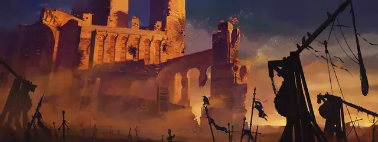

Солдат
Soldier

Сколько вы помните, в вашей жизни всегда была война. С молодости вы проходили тренировки, учились использовать оружие и доспехи, изучали технику выживания, включая то, как оставаться живым на поле боя. Вы могли быть частью армии страны или отряда наёмников, а может, были местным ополченцем во время войны.
Выбрав эту предысторию, определите вместе с Мастером, в какой военной организации вы состояли, до какого звания вы дослужились, и что вам за это время довелось пережить. Что это было, регулярная армия, городская стража или деревенское ополчение? Это могла быть частная армия наёмников дворянина или самостоятельный бродячий отряд наёмников.
Владение навыками: Атлетика, Запугивание.
Владение инструментами: Один игровой набор, транспорт (сухопутный).
Снаряжение: Знак отличия, трофей с убитого врага (кинжал, сломанный клинок или кусок знамени), набор игровых костей или колода карт, комплект обычной одежды, поясной кошель с 10 зм
Специализация
Будучи солдатом, вы выполняли особую роль. Совершите бросок к8 или выберите один из вариантов из таблицы самостоятельно:
| к8 | Специализация |
| 1 | Офицер |
| 2 | Разведчик |
| 3 | Пехотинец |
| 4 | Кавалерист |
| 5 | Врач |
| 6 | Интендант |
| 7 | Знаменосец |
| 8 | Обслуживающий персонал (повар, кузнец и т.п.) |
Умение: воинское звание
Будучи солдатом, вы заслужили звание. Солдаты, верные военной организации, которой вы раньше принадлежали, всё еще признают вашу власть и влияние, и они подчиняются вам, если их звание ниже вашего. С помощью своего звания вы можете оказывать влияние на других солдат и брать во временное пользование простое снаряжение или лошадей. Возможно, вас пропустят внутрь военного лагеря или крепости, если к вашему званию отнесутся с уважением.
Персонализация
Ужасы войны вкупе с жёсткой дисциплиной воинской службы оставляют следы на всех солдатах, формируя их идеалы, создавая привязанности, а также оставляя на них шрамы, как физические, так и ментальные.
| к8 | Черта характера |
| 1 | Я всегда вежлив и почтителен. |
| 2 | Меня терзают воспоминания о войне. Не могу забыть то насилие, что мне довелось увидеть. |
| 3 | Я потерял много друзей, и теперь с трудом завожу новых. |
| 4 | У меня много воодушевляющих и предостерегающих рассказов из военного прошлого, подходящих практически к любой боевой ситуации. |
| 5 | Я могу смотреть прямо на адскую гончую, не отводя глаз. |
| 6 | Мне нравится быть сильным и крушить вещи. |
| 7 | У меня грубое чувство юмора. |
| 8 | Я решаю проблемы прямолинейно. Простое решение — лучший путь к успеху. |
| к6 | Идеал |
| 1 | Высшее благо. Наш жребий — отдать свои жизни ради других. (Добрый) |
| 2 | Ответственность. Я делаю что должен, и подчиняюсь вышестоящим. (Законный) |
| 3 | Независимость. Если слепо следовать приказам, попадаешь под пяту тирании. (Хаотичный) |
| 4 | Мощь. В жизни и войне побеждает сильнейший. (Злой) |
| 5 | Живи и не мешай другим. Идеалы не стоят того, чтобы ради них убивать или воевать. (Нейтральный) |
| 6 | Нация. Мой город, нация и народ — вот что самое главное. (Любой) |
| к6 | Привязанность |
| 1 | Я по-прежнему готов отдать свою жизнь за тех, кому поклялся служить. |
| 2 | Кое-кто спас мне жизнь на поле боя. С тех пор я никогда не оставляю друзей, оставшихся в бою. |
| 3 | Моя честь — моя жизнь. |
| 4 | Никогда не забуду сокрушительное поражение, которое потерпел наш отряд, или врага, устроившего это. |
| 5 | Те, кто сражаются рядом со мной, достойны того, чтобы за них умереть. |
| 6 | Я сражаюсь за тех, кто не может это сделать сам. |
| к6 | Слабость |
| 1 | Одно чудовище, с которым мы когда-то сразились, до сих пор заставляет меня дрожать от страха. |
| 2 | Я мало уважаю тех, кто не доказал, что является достойным воителем. |
| 3 | В одном сражении я совершил ужасную ошибку, стоившую жизни многим — и я сделаю что угодно, лишь бы это оставалось в тайне. |
| 4 | Ярость к врагам ослепляет меня и делает безрассудным. |
| 5 | Я подчиняюсь закону, даже если закон вызывает страдания. |
| 6 | Я скорее съем свой доспех, чем признаюсь, что был неправ. |